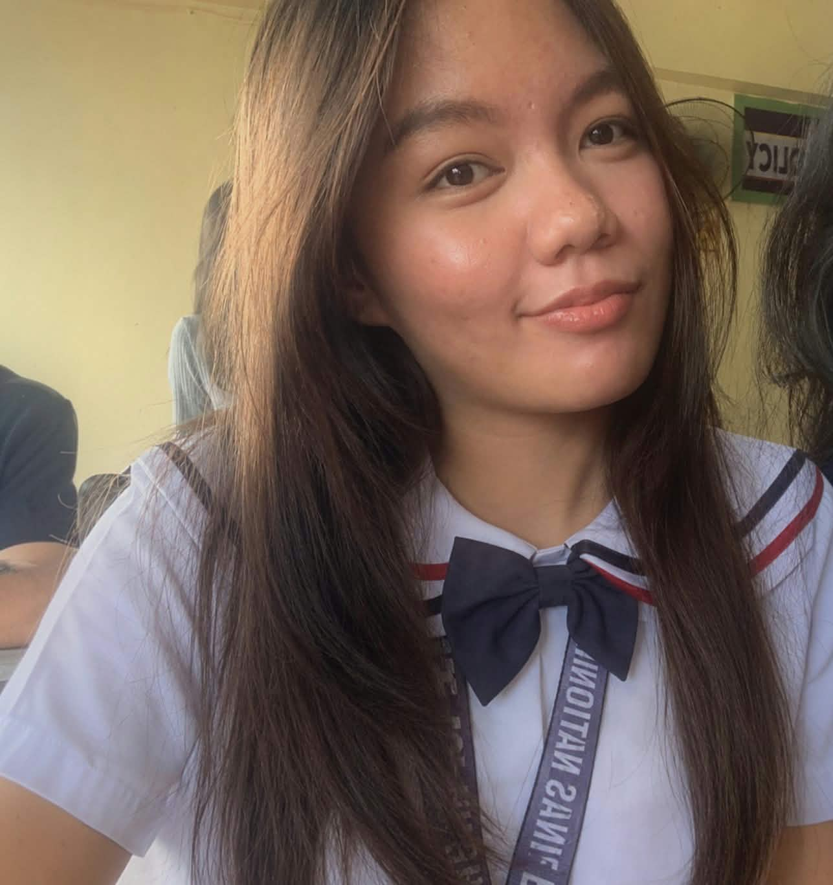
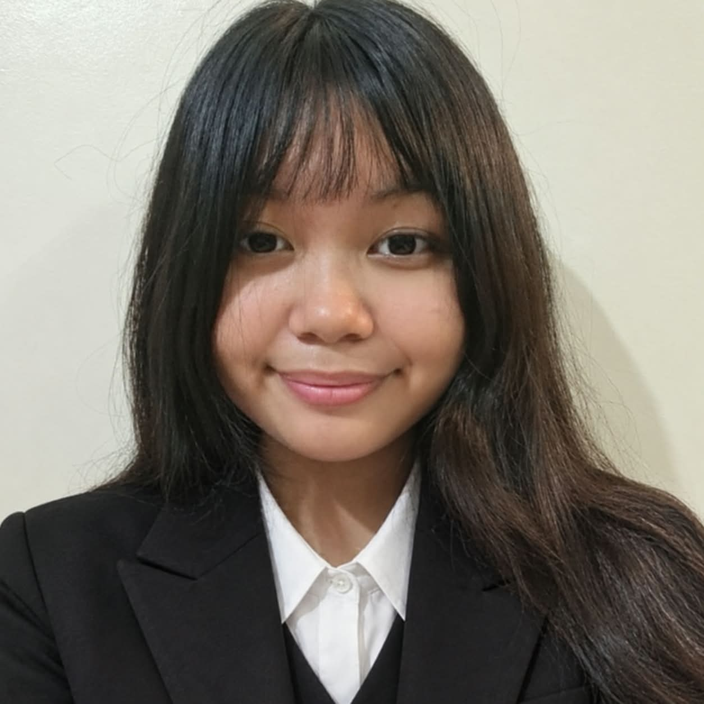

Mhayumie M. Granados
Lead Coder
VIEW PROFILE →
Meet the students who worked together to create and develop the Las Piñas National High School – Almanza website. Tap a profile to learn more about each member.
Click any member's card to view their profile.


School Information and Photos:
Las Piñas National High School – Almanza Facebook Page